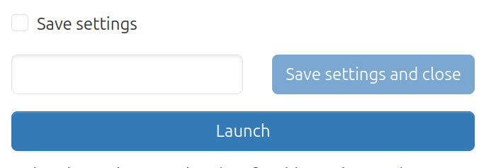
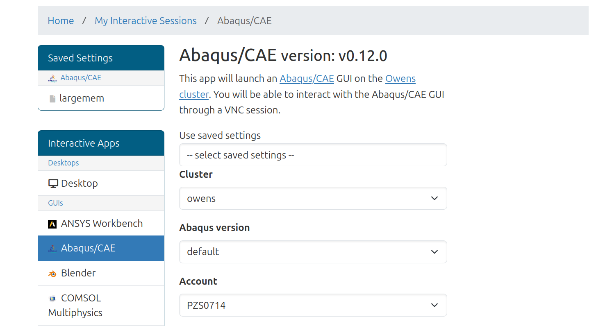
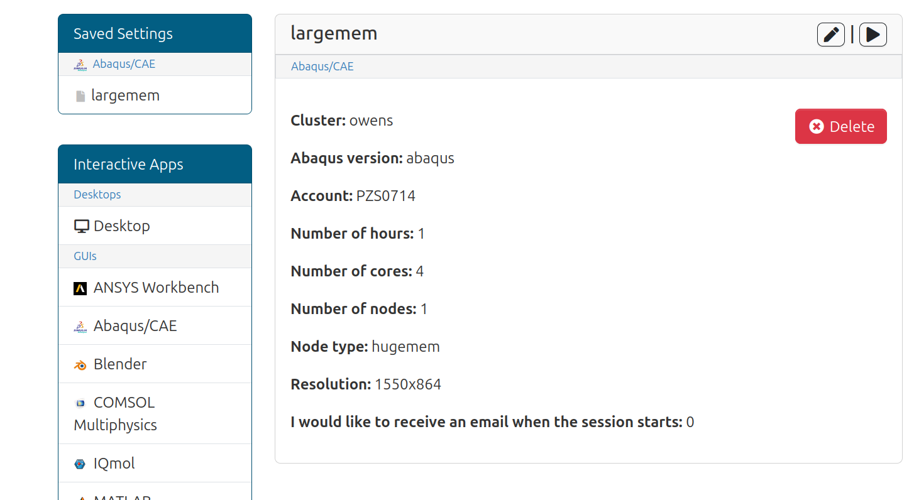

Saving interactive application settings¶
If enabled, users can save and manage saved settings for their interactive applications.
Enabling¶
This feature is controlled by the ondemand.d configuration bc_saved_settings.
Set it to true to enable this feature.
It is disabled by default.
Demonstration¶
Here’s a demonstration of how this feature works and what it will do.
Saving Settings¶
When this feature is enabled, users will begin to see this checkbox above
the Launch button to save these choices currently in the form.

Checking this checkbox will open a modal where the user can give these settings a name.
Once the name is specified users can Launch and that will
save the settings along with launching the job. They can also choose
to simply save the settings and close.
Using Settings¶
When a user has saved settings for a given interactive application, they’ll now see a dropdown menu to choose those settings. Note that when a given saved setting is chosen, the form updates the values automatically.

Editing and deleting settings¶
You may have seen in the image above that there’s a new section
on the left panel entitled Saved Settings.
Clicking on the icons in this panel will open a page much like the image below.
Here you can delete the saved setting by pressing the Delete button. You can also edit the settings by pressing the pencil icon at the top right of the card. You can also submit a job using these settings with the play icon.
